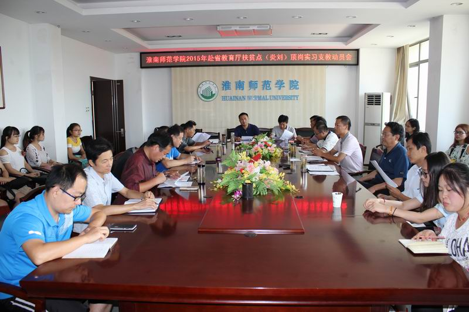
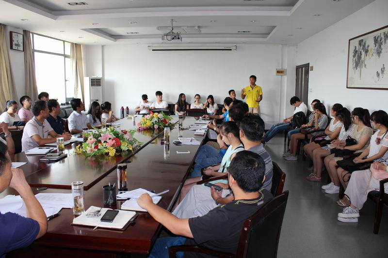

淮南师范学院举行2015年赴省教育厅扶贫点寿县炎刘镇顶岗实习支教动员活动
——淮南师范学院“炎刘模式”开端

8月26日下午4点，学校在行政楼314会议室召开2015年赴省教育厅扶贫点寿县炎刘镇顶岗实习支教动员大会。副院长马建国，校师范生顶岗支教实习工作领导小组成员，相关学院的部分领导、指导教师，28名实习生等参加会议。动员会由教务处处长朱其永主持。
教务处技能训练与测评中心主任龚宝成简单介绍了2015年赴省教育厅扶贫点寿县炎刘镇顶岗实习支教的基本情况。接着，28名实习生依次发言，他们表示：一定不辜负学校期望，出色地完成顶岗支教实习的各项任务，为母校争光。随后，美术与设计学院李永春、教育学院张爱群、音乐与舞蹈学院张良宝、体育学院应力分别作了表态性发言，希望同学们通过顶岗实习，能学以致用、增长见识、扩大视野，进一步提高师范生的技能和水平，为今后走上讲台打下坚实的基础。
马建国在动员讲话中强调了顶岗实习支教活动的重要意义，提出了三点希望和要求：—是怎么看待，要把此次活动看作一件是“大事、好事和实事”，全体实习生要以强烈的责任心和使命感，满腔热情地投入实习工作，高标准圆满地完成教学任务；二是怎么做好，要俯下身来“融入、投入和深入”，要虚心向实习学校的老师学习，遵守学校的各项规定，注重细节，努力提高教育教学技能；三是学会享受，要珍惜这次难得的机会，把这件有意义的事情做实做好，使支教活动变成一个轻松愉快的过程，努力做到让学生、家长满意，让学校满意，让自己满意。他还特别强调全体师生要按照学校和实习地的工作要求开展实习工作，确保个人人身安全和交通安全。
会后，28名实习生在龚宝成老师的指导下与6个实习学校进行了对接。9月5日上午，他们将踏上征程，开始为期一学年的顶岗实习生活。
